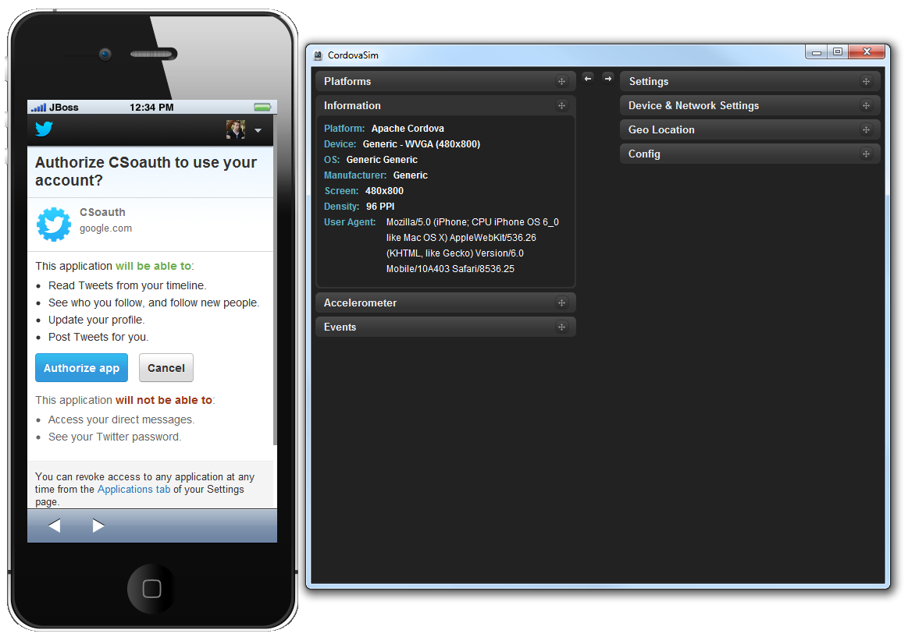

BrowserSim/CordovaSim
InAppBrowser plugin support in CordovaSim
Now CordovaSim is able to simulate the inAppBrowser API. The InAppBrowser is a web browser view that displays when calling window.open().
The InAppBrowser window behaves like a standard web browser, and cannot access Cordova APIs.

Related JIRA: JBIDE-15512.
ChildBrowser plugin support in CordovaSim
Now CordovaSim has ChildBrowser plugin support. ChildBrowser plugin is considered to be deprecated (InAppBrowser is an up-to-date substitution), nevertheless it's one of the most popular plugins overall.

Related JIRA: JBIDE-13743.